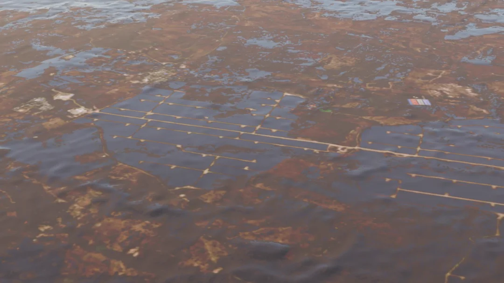
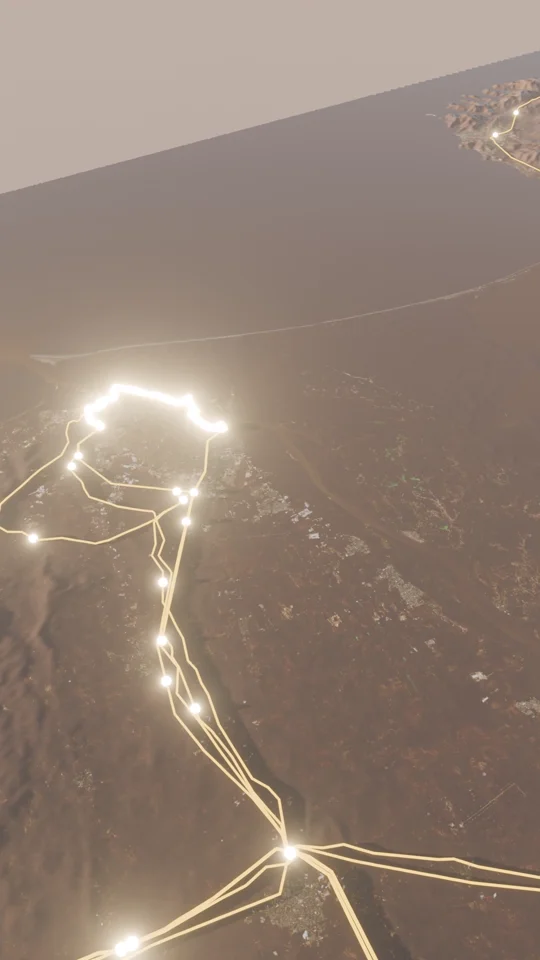

Capítulo 02 Generación solar y almacenamiento
Guardar el sol para la noche.
El sol entrega más energía a mediodía. La demanda sigue alta al anochecer. Desliza el reloj de Colombia y descubre lo que pasa entre las dos curvas.
Empezar el recorridoCaribe colombiano · Render de Blender
XM · Perfil horario
El reloj de la red.
Compara lo que generan los paneles y lo que consume Colombia a cada hora del día.
Generación solar y demanda
Cargando datos…
Render 3D · Caribe
Cuando cae la tarde.
Compara dos momentos del vuelo sobre el Caribe. La radiancia nocturna VIIRS aporta la capa de luz del render.


DíaNocheAlmacenamiento · Caso de referencia
Guardar energía para después.
Una batería puede cargarse cuando hay generación disponible y entregar energía más tarde, cuando cambia la demanda.
RedBatería
La batería absorbe energía de la red para guardarla.
Boletín UPME · La Arenosa, pág. 44Material del capítulo
Datos y video
Consultar fuentesCarpeta de Drive pendiente